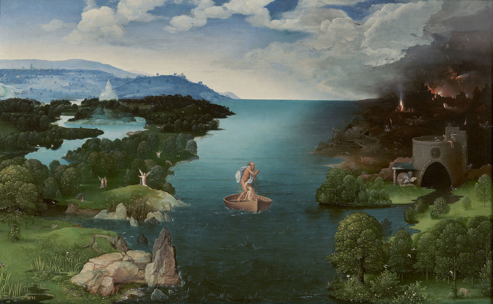
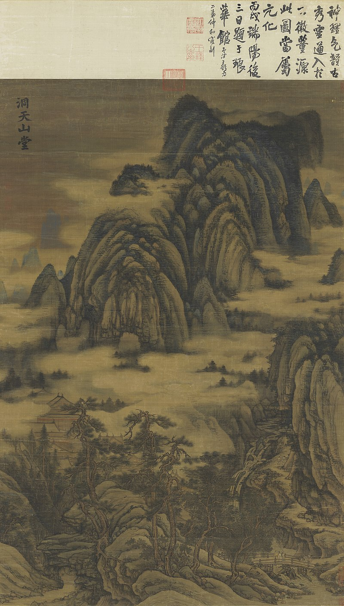
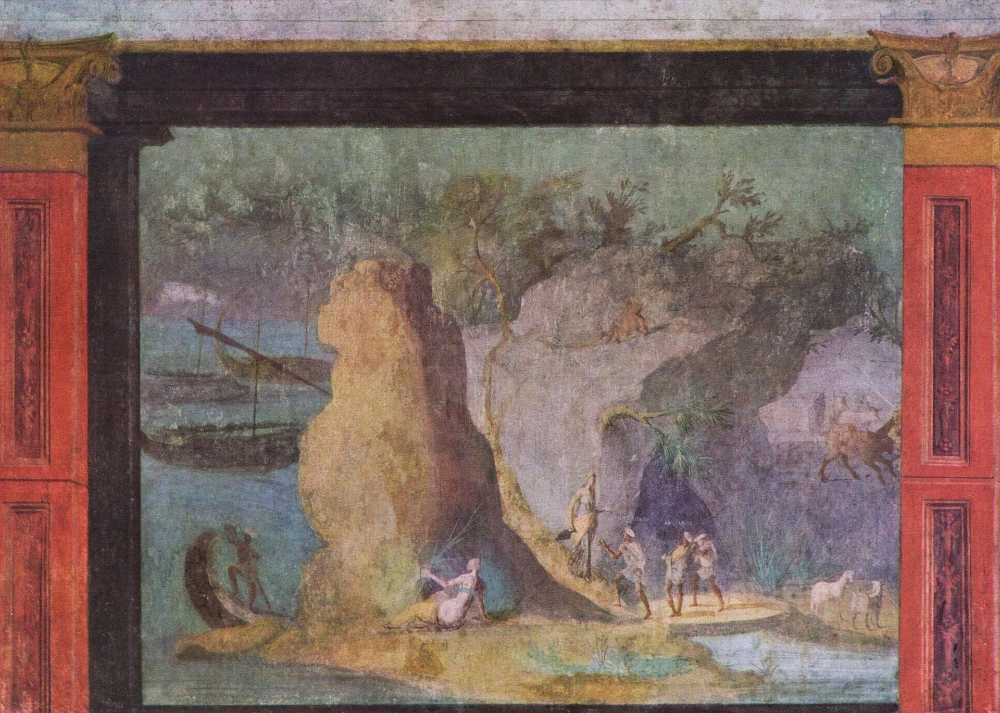
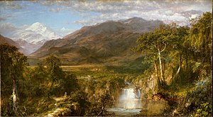
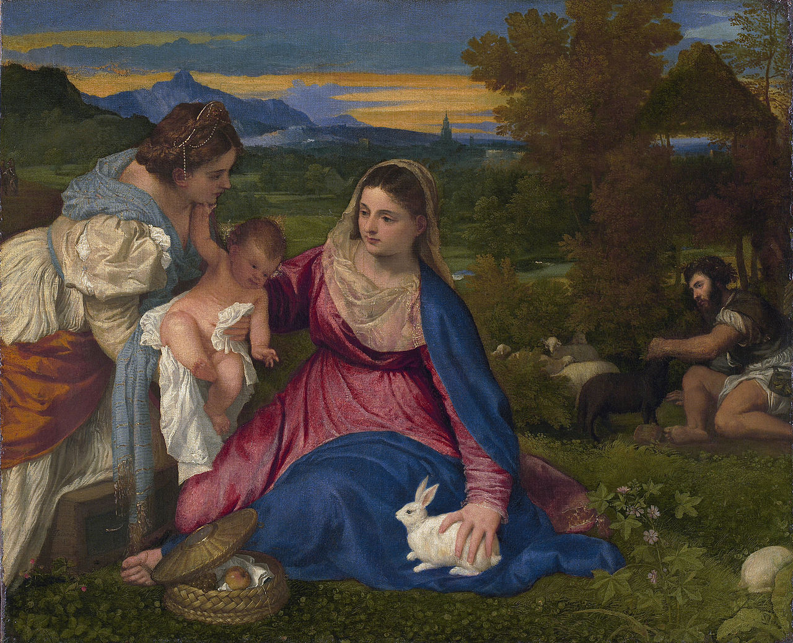

Landscape


Caspar David Friedrich, Wanderer above the Sea of Fog, 1818. A classic image of German Romanticism.

Hasegawa Tōhaku, Pine Trees screen (Shōrin-zu byōbu, 松林図 屏風), one of a pair of folding screens, Japan>

Landscape with scene from the Odyssey, Rome, c. 60–40 BCE

Frederic Edwin Church, The Heart of the Andes, 1859. Church was part of the American Hudson River School.
